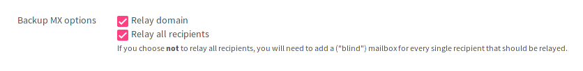

Debug common problems
Here we list common problems and possible solutions:
Mail loops back to myself¶
Please check in your mailcow UI if you made the domain a backup MX:

I can receive but not send mails¶
There are a lot of things that could prevent you from sending mail:
- Check if your IP is on any blacklists. You could use dnsbl.info or any other similar service to check for your IP.
- There are some consumer ISP routers out there, that block mail ports for non whitelisted domains. Please check if you can reach your server on the ports
465or587:
# telnet 74.125.133.27 465
Trying 74.125.133.27...
Connected to 74.125.133.27.
Escape character is '^]'.
My mails are identified as Spam¶
Please read our guide on DNS configuration.
docker-compose throws weird errors¶
… like:
ERROR: Invalid interpolation format ...AttributeError: 'NoneType' object has no attribute 'keys'.ERROR: In file './docker-compose.yml' service 'version' doesn't have any configuration options.
When you encounter one or similar messages while trying to run mailcow: dockerized please check if you have the latest version of Docker and docker-compose
Container XY is unhealthy¶
This error tries to tell you that one of the (health) conditions for a certain container are not met. Therefore it can’t be started. This can have several reasons, the most common one is an updated git clone but old docker image or vice versa.
A wrong configured firewall could also cause such a failure. The containers need to be able to talk to each other over the network 172.22.1.1/24.
It might also be wrongly linked file (i.e. SSL certificate) that prevents a crucial container (nginx) from starting, so always check your logs to get an Idea where your problem is coming from.
Address already in use¶
If you get an error message like:
ERROR: for postfix-mailcow Cannot start service postfix-mailcow: driver failed programming external connectivity on endpoint mailcowdockerized_postfix-mailcow_1: Error starting userland proxy: listen tcp 0.0.0.0:25: bind: address already in use
while trying to start / install mailcow: dockerized, make sure you’ve followed our section on the prerequisites.
XYZ can’t connect to …¶
Please check your local firewall! Docker and iptables-based firewalls sometimes create conflicting rules, so disable the firewall on your host to determine whether your connection issues are caused by such conflicts. If they are, you need to manually create appropriate rules in your host firewall to permit the necessary connections.
If you experience connection problems from home, please check your ISP router’s firewall too, some of them block mail traffic on the SMTP (587) or SMTPS (465) ports. It could also be, that your ISP is blocking the ports for SUBMISSION (25).
While Linux users can chose from a variety of tools1 to check if a port is open, the Windows user has only the command telnet host port available by default (and it has to be activated since Windows Vista).
To enable telnet on a Windows after Vista please check this guide or enter the following command in an terminal with administrator priviliges:
dism /online /Enable-Feature /FeatureName:TelnetClient
Inotify instance limit for user 5000 (UID vmail) exceeded (see #453)¶
Docker containers use the Docker hosts inotify limits. Setting them on your Docker host will pass them to the container.